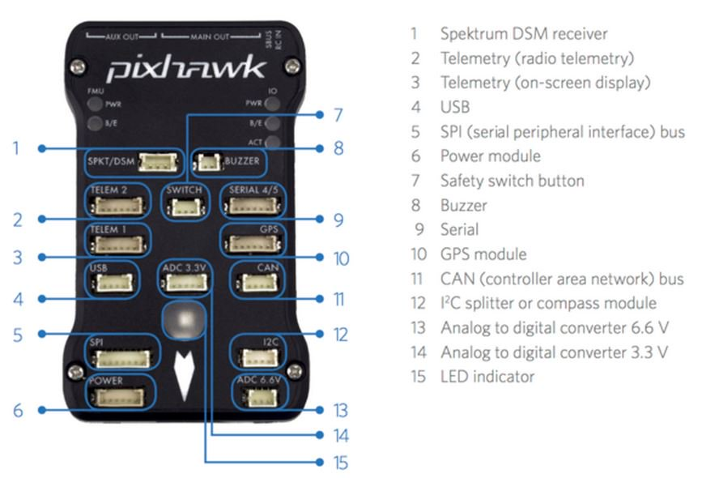

[TR] Pixhawk Otopilot ve Özellikleri
Herkese Merhabalar,
Uzun bir aradan sonra tekrar bir yazı hazırladım. Aslında bu yazıya çok
önceden başlamıştım fakat devamını getirmemiştim şimdi tamamlayabildim ancak :).
Evet bu yazımda Pixhawk isimli otopilottan bahsetmek istiyorum. Pixhawk açık
kaynak kodlu Stm32 tabanlı yazılım tabanı olarak da ArduPilota dayanan bir
otopilot modülü. Burada bir yorumda bulunmam gerekirse, açık kaynaklı
otopilotlar arasında en başarılısı bana göre. Bu teorimi kanıtlamak için de
hemen özelliklerine geçmek istiyorum.

-
Ana işlemcisi 32 bit Arm Cortex M4 tabanlı ST Microelectronic’in bir ürünü( STM32F427 Cortex M4 core with FPU). Bu işlemci “NuttX Real Time Operating System” ile kullanılıyor.
-
14 Adet PWM çıkışı bulunuyor.(Motor ve servomotor için)
-
Bordunun üzerinde Uart I2C CAN gibi çevresel birimler bulunuyor. Bunlarla çalışan herhangi bir sönsör, kontrol elemanı kolayca eklenebilir.
-
Durum belirtlme için çok renkli LED indicator üzerinde hazır geliyor.
-
Sd kart desteği sayesinde uzun süre ve yüksek frekansta sensör verisini daha sonra incelemek için kaydedebiliyorsunuz.
-
Kritik noktalardan biri olan uçuş için gerekli sensör gurbu şöyle:
-
ST Micro L3GD20 3-axis 16-bit gyroscope
-
ST Micro LSM303D 3-axis 14-bit accelerometer / magnetometer
-
Invensense MPU 6000 3-axis accelerometer/gyroscope
-
MEAS MS5611 barometer
-
Spektrum DSM / DSM2 / DSM-X® Satellite, S.BUS uyumlu.(Kumanda haberleşmesi için)
-
Güç sistemi özellikleri:
-
Diyot kontrolcüsü “automatic failover” özelliğiyle birlikte
-
7 V yüksek akımlı servo çıkışları
-
Tüm çıkışlar yüksek akım korumalı tüm girişlerinin de “Electro Static Discharge(ESD)” testleri yapılmış.
-
STM32F103 failsafe co-processor olarak bulunuyor. Yani ana işlemcide bir sorun olursa operasyonlar bu yedek üzerinden devam ettirilebiliyor.
Yazımın devamında Pixhawk’ın özgür dünyasını kullanarak yapılan uygulamalardan ve yapılabileceklerden bahsetmek istiyorum.
- Her türlü araç tipini (multikopter, helikopter, uçak, kara araçları….) destekliyor.
- Her türlü multikopter tipini (tricopter,quadcopter, hekzacopter, koaksiyelleri…) destekliyor.
- Optical flow, akım sensöü gibi başka otopilotlarda pek olmayan sensörleri destekliyor
- OSD çıkışı mevcut
- Oto paraşüt özelliği
- Gimbal kontrolü
- Antenna tracker desteği
- Phyton ile ile kodun ana kısmına hiç bakmadan harici bi görev uygulaması yazıp derleyip ekleyebilme
- Loglarını kullanarak resimlere “Geotag” yapabilme
Pixhawk için yararlı linkler
[](https://www.blogger.com/goog_469727306)
https://dev.px4.io/
https://ardupilot.org/copter/
https://ardupilot.org/copter/docs/common-table-of-contents.html
Çoğu linkin alındığı anasayfa
Donanımsal Kurulum linkleri
https://ardupilot.org/copter/docs/configuring-hardware.html
motor kurulumu, yerleşim dönme yönleri vb
[](https://www.blogger.com/goog_469727340)
https://ardupilot.org/copter/docs/common-minim-osd-quick-installation-guide.html
https://code.google.com/p/arducam-osd/wiki/minimosd
Osd kurulum linkleri
https://copter.ardupilot.com/wiki/common-telemetry-landingpage/
Telemetri modül kurulum
https://copter.ardupilot.com/wiki/common-px4flow-overview/
Optical flow sensör kurulum
https://copter.ardupilot.com/wiki/parachute/
Oto paraşüt özelliği
https://copter.ardupilot.com/wiki/common-servo/
Uzaktan servo kontrolü
https://copter.ardupilot.com/wiki/common-electro-permanent-magnet-gripper/
Manyetik bırakma mekanizması
https://copter.ardupilot.com/wiki/common-cameras-and-gimbals/
Otopilot ile gimbal kontrolü
https://copter.ardupilot.com/wiki/common-3d-mapping/
3d maping
https://ardupilot.org/copter/docs/common-antenna-tracking.html Antenna Tracking özelliğini kullanma
https://ardupilot.org/copter/docs/common-powermodule-landingpage.html
akım sensörü
Otopilotun Kodunu değiştirme
https://dev.px4.io/starting-building.html](https://www.blogger.com/goog_543916667)
https://planner.ardupilot.com/wiki/common-geotagging-images-with-mission-planner/
“Geotagged” resimler mission plannerla.
Kurulum ve Ayarlar linkleri
[](https://www.blogger.com/goog_543916669)
https://copter.ardupilot.com/wiki/flying-arducopter/
ilk uçuş hakkında kapsamlı bilgi her başlığı incelemek gerekli
az çok gerekli bütün ayarların nasıl yapılacağı anlatılmış
[](https://www.blogger.com/goog_543916675)
https://copter.ardupilot.com/wiki/arducopter-parameters/
ayarlanabilecek tüm parametreler ve ne işe yaradıkları
[](https://www.blogger.com/goog_543916679)
https://copter.ardupilot.com/wiki/failsafe-battery/
battery failsafe
https://copter.ardupilot.com/wiki/initial-setup/
İlk uçuş kalibrasyonu
[](https://www.blogger.com/goog_543916683)
https://planner.ardupilot.com/wiki/common-loading-firmware-onto-pixhawk/
Pixhawk üzerine kodu yükleme
https://ardupilot.org/copter/docs/common-compass-setup-advanced.html
Magnometer calibration( Çok önemli!!!)
https://planner.ardupilot.com/wiki/common-mission-planner-telemetry-logs/
Waypoint yükleme
[](https://www.blogger.com/goog_543916695)
https://www.qgroundcontrol.org/mavlink/start
Mavlink communication protocol
https://dev.ardupilot.com/wiki/code-overview-adding-a-new-mavlink-message/
Mavlink yeni mesaj oluşturma